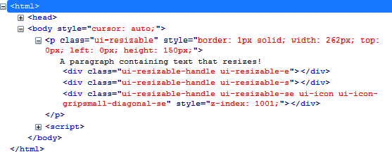

{% include JB/setup %}
{% raw %}
<div>
<div class="book" title="Formatting Content"><div class="book"><div class="book"><div class="book"><h1 class="title2"><a id="formatting_content-id10" class="calibre1"></a>Formatting Content</h1></div></div></div><p class="calibre7">The <code class="literal">resizable ()</code> method displays
    an icon in the bottom right of the item to resize. In addition, it adds
    new CSS classes to resizable HTML elements.</p><p class="calibre7">In <a class="ulink" href="ch13s02.html#html_generated_by_the_resizable_open_par" title="Figure 13-2. HTML generated by the resizable () method">Figure 13-2</a>, for
    example, the jQuery UI changes the HTML following the <span class="firstname"><code class="literal">resizable ()</code></span>
    instruction (this code was recovered using the Firebug extension in
    Firefox).</p><p class="calibre7">The <code class="literal">&lt;p&gt;</code> element was
    assigned the <code class="literal">ui-resizable</code> CSS class,
    while three new <code class="literal">&lt;div&gt;</code> elements
    became part of it, as follows (they all have the <code class="literal">ui-resizable-handle</code> CSS class):</p><div class="book"><ul class="itemizedlist"><li class="listitem"><p class="calibre7">The right side of the element uses the <code class="literal">ui-resizable-e</code> CSS class (<code class="literal">e</code> indicates East).</p></li><li class="listitem"><p class="calibre7">The bottom of the element uses the <code class="literal">ui-resizable-s</code> CSS class (<code class="literal">s</code> indicates South).</p></li><li class="listitem"><p class="calibre7">The icon at the bottom right corner of the resizable element
        uses the <code class="literal">ui-resizable-se</code> CSS class
        (<code class="literal">se</code> indicates Southeast).</p></li></ul></div><div class="figure"><a id="html_generated_by_the_resizable_open_par" class="firstname"></a><div class="book"><div class="book"><a id="I_mediaobject13_d1e12482" class="firstname"></a></div></div><p class="title4">Figure 13-2. HTML generated by the resizable () method</p></div><p class="calibre7">You can use CSS classes of elements to customize the display. For
    example, if we change the <code class="literal">ui-resizable-e</code> and <code class="literal">ui-resizable-s</code> CSS classes, we can prevent
    scaling on the sides and force the user to resize using only the icon in
    the lower right corner. To customize the display, simply specify a
    different value for <code class="literal">width</code> and <code class="literal">height</code> properties of these elements (<code class="literal">width</code> changes the width of the <code class="literal">ui-resizable-e</code> element, while <code class="literal">height</code> changes the height of the <code class="literal">ui-resizable-s</code> element).</p><p class="calibre7">Modify these elements in the HTML by adding a <code class="literal">&lt;style&gt;</code> tag:</p><a id="I_programlisting13_d1e12519" class="firstname"></a><pre class="programlisting">&lt;script src = jquery.js&gt;&lt;/script&gt;
&lt;script src = jqueryui/js/jquery-ui-1.8.16.custom.min.js&gt;&lt;/script&gt;

&lt;link rel=stylesheet type=text/css
      href=jqueryui/css/smoothness/jquery-ui-1.8.16.custom.css /&gt;

<span class="firstname"><strong class="userinput">&lt;style type=text/css&gt;</strong></span>
  <span class="firstname"><strong class="userinput">.ui-resizable-e {</strong></span>
    <span class="firstname"><strong class="userinput">width : 0px;</strong></span>
  <span class="firstname"><strong class="userinput">}</strong></span>
  <span class="firstname"><strong class="userinput">.ui-resizable-s {</strong></span>
    <span class="firstname"><strong class="userinput">height : 0px;</strong></span>
  <span class="firstname"><strong class="userinput">}</strong></span>
<span class="firstname"><strong class="userinput">&lt;/style&gt;</strong></span>

&lt;p style="border:solid 1px;width:150px"&gt;
   A paragraph containing text that resizes!
&lt;/p&gt;

&lt;script&gt;

$("p").resizable ();

&lt;/script&gt;</pre><p class="calibre7">This makes it impossible to resize the element other than by using
    the icon. We will see in the next section that options allow you to
    indicate which sides can be resized.</p></div></div>

{% endraw %}

